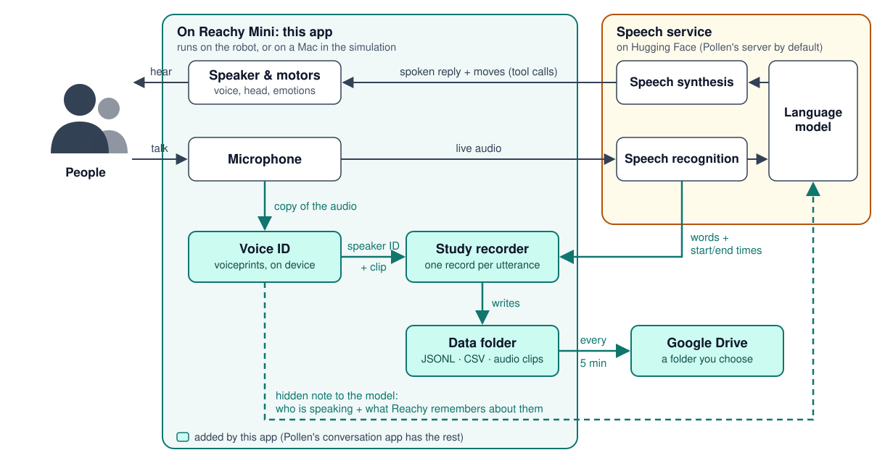

Timed transcripts
Every utterance, by a person or by Reachy, with its start time, end time, and duration.
People talk with Reachy Mini by voice. Talk with Reachy keeps a timed record of each conversation: what was said, when, and who said it, recognized by voice. Its Day Center mode is designed for adults with intellectual and developmental disabilities (IDD).
Research prototype: not a therapy or medical device, and not yet evaluated with participants.
I need a break.
Are you feeling good, or not good?
Not good.
Do you want to breathe with me, or listen to music?
Conversations work as in Pollen's conversation app. What this app adds is a research record of each one.
Every utterance, by a person or by Reachy, with its start time, end time, and duration.
Each person utterance gets a speaker ID found by voice: P01 for a participant, S01 for staff, V003 for a voice the app learned on its own.
An audio clip of each person utterance, and robot actions and breaks on the same timeline.
Files upload every five minutes to the Google Drive of the person who signs the robot in. No computer needs to be nearby.
The app starts in this mode; staff can switch to the general personality in the app's settings. It follows plain-language and accessibility guidance for adults with IDD.

By default it saves what everyone near the robot says, an audio clip of each utterance, and a voiceprint of each voice. Whoever installs it is responsible for telling people and getting their consent. See Privacy and responsibility.